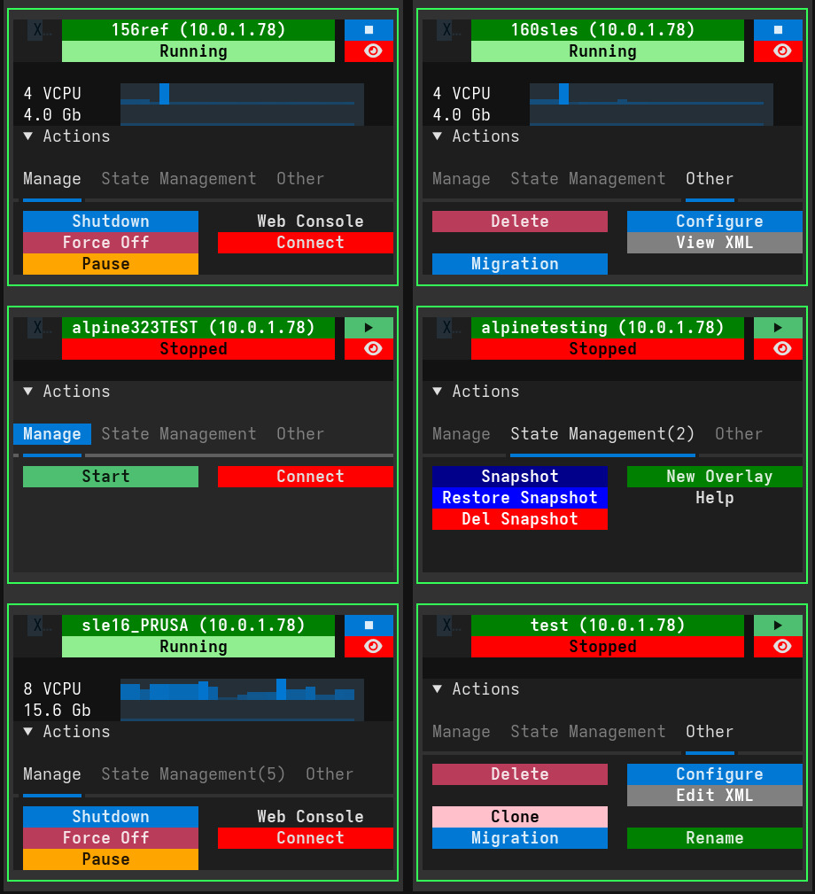

VM Actions¶
The Actions panel is the control center for each Virtual Machine. It is revealed by clicking the "Actions" collapsible header on a VM card.
The available operations are organized into three tabs: Manage, State management, and Other.

Manage Tab¶
This tab contains the most common power management and connectivity controls.
-
Start:
- Boots the virtual machine.
- Visible when the VM is Stopped.
-
Shutdown:
- Sends an ACPI shutdown signal to the guest operating system, requesting a graceful shutdown.
- Visible when the VM is Running.
-
Force Off:
- Forcefully terminates the VM process. This is equivalent to pulling the power plug and may cause data loss.
- Visible when the VM is Running or Paused.
-
Pause:
- Pauses the execution of the VM, freezing its state in memory.
- Visible when the VM is Running.
-
Resume:
- Resumes execution of a paused VM.
- Visible when the VM is Paused.
-
Configure:
- Opens a detailed view of the VM's hardware configuration (CPU, Memory, Disks, Networks, etc.).
-
Web Console / Show Console:
- Web Console: Configures and starts a secure noVNC session, allowing you to access the VM's display via a web browser. Useful for remote access without a dedicated client.
- Show Console: appears when a session is active; clicking it opens the browser or reconnects.
- Status Indicator: Shows "(WebC On)" next to the VM status when a web console session is active.
-
Text Console:
- Opens a direct serial console (
virsh console) to the VM in a new tmux window. - Visible only when VirtUI Manager is running inside a tmux session.
- Opens a direct serial console (
-
Connect:
- Launches the configured desktop remote viewer (e.g.,
virt-viewer) for a high-performance native connection to the VM's display (SPICE/VNC).
- Launches the configured desktop remote viewer (e.g.,
VM Card Interactive Features¶
Sparkline View Toggle¶
The VM card displays real-time performance data using sparklines. You can toggle between two different views:
- Resource View: Shows CPU usage and Memory usage sparklines
- I/O View: Shows Disk I/O (read/write) and Network I/O (receive/transmit) sparklines
To toggle views: Click on any sparkline area to switch between Resource and I/O views.
Detailed Tooltip Information¶
Hover over the VM name to see a comprehensive tooltip with detailed information including:
- UUID and hypervisor connection details
- Current status and IP addresses
- Boot device configuration
- CPU model and memory allocation
- Server connection information
Double-Click Refresh¶
Double-click on the VM name to trigger a background refresh of the VM's detailed information, including XML configuration data.
State management Tab¶
This tab provides advanced storage management features for version control and testing, as well as VM state persistence.
Hibernate VM¶
Saving a VM (also known as "Managed Save") stops the VM and writes its entire memory state to a file on disk. It acts like hibernation on a physical computer.
- Hibernate VM:
- Hibernates the virtual machine.
- Visible when the VM is Running.
Snapshots¶
Snapshots save the state of the virtual machine (disk and memory) at a specific point in time.
-
Snapshot:
- Creates a new snapshot. You can provide a name and description.
- Visible when the VM is Running or Paused.
-
Restore Snapshot:
- Reverts the VM to a selected snapshot state.
- Visible when the VM is Stopped.
-
Del Snapshot:
- Permanently deletes a selected snapshot.
Overlays¶
Overlays (or "Linked Clones" for a single disk) allow you to create a temporary writable layer on top of your base disk image. This is ideal for testing potentially destructive changes.
-
New Overlay:
- Creates a new overlay file backed by the current disk image. Changes are written to the overlay, leaving the original disk untouched.
- Visible when the VM is Stopped and no overlay exists.
-
Commit Disk:
- Merges changes from the active overlay back into the base backing file.
- Visible when the VM is Running and using an overlay.
-
Discard Overlay:
- Deletes the overlay file, discarding all changes made since it was created, and reverts the VM to the base image.
- Visible when the VM is Stopped and using an overlay.
-
Help:
- Displays a guide on how to use the Overlay feature.
Other Tab¶
This tab contains administrative actions for the VM lifecycle.
-
Delete:
- Permanently deletes the virtual machine. You will be prompted to choose whether to delete the associated storage (disk images) or keep them.
-
! Clone !:
- Creates a duplicate of the VM.
- Linked Clone: Clones the definition but shares the disk image (saves space, fast).
- Full Clone: Copies the entire disk image (slower, fully independent).
- Visible when the VM is Stopped.
-
! Migration !:
- Moves the VM to another server managed by VirtUI Manager.
- Requires SSH connectivity between hosts.
-
View XML / Edit XML:
- View XML: Displays the raw Libvirt XML configuration for inspection. (Visible when Running)
- Edit XML: Opens an editor to manually modify the VM's XML configuration. (Visible when Stopped)
-
Rename:
- Changes the name of the virtual machine.
- Visible when the VM is Stopped.